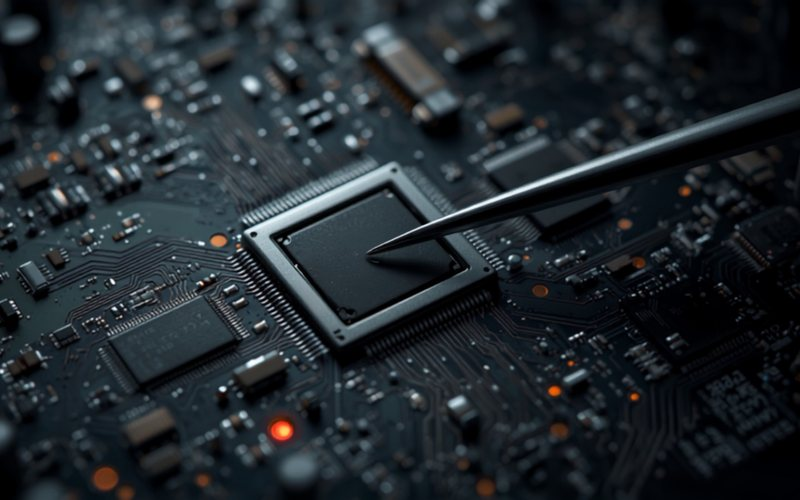

Как ускорить старый MacBook и почему это не апгрейд обычного ноутбука
MacBook стал задумываться, курсор крутится, вкладки перезагружаются. Первый совет, который выдаёт интернет, — «добавьте оперативной памяти и поставьте SSD». Для ноутбука на Windows это рабочий рецепт. Для MacBook он в большинстве случаев невыполним физически, и об этом честнее узнать до похода в сервис, а не после.
- На всех MacBook с процессорами Apple (M1 и новее) память встроена прямо в чип, а накопитель распаян на плате — апгрейд невозможен в принципе.
- На Intel-моделях с 2016 года оперативная память тоже распаяна, а накопитель распаян почти везде.
- Реальный апгрейд остался у MacBook Air 2013-2017 и Retina-моделей Pro 2013-2015: там меняется накопитель.
- Полный апгрейд, как у обычного ноутбука, возможен только на MacBook Pro без Retina — 2012 года и старше.
- Если апгрейд невозможен, скорость чаще всего возвращают три вещи: чистка с заменой термопасты, замена изношенного аккумулятора и освобождение места на диске.
Почему совет «добавь памяти и поставь SSD» не работает с MacBook
В обычном ноутбуке оперативная память стоит планками в слотах, а накопитель — отдельной деталью в разъёме. Обе меняются отвёрткой за пятнадцать минут, и именно поэтому советы про апгрейд в интернете выглядят так уверенно.
Apple шла в другую сторону. Сначала память припаяли к плате, чтобы сделать корпус тоньше. Потом припаяли накопитель. А с переходом на собственные процессоры память переехала прямо внутрь чипа — она физически находится в одном корпусе с процессором, и «планок», которые можно было бы добавить, там нет как класса.
Накопителю повезло чуть больше: у части моделей он всё-таки съёмный, хотя и в собственном формате Apple. Ниже разберём по годам, к какой группе относится именно ваш ноутбук.

Разбор по поколениям: что можно поменять именно у вас
Модель и год написаны в меню «Об этом Mac». Дальше смотрите по группам — они идут от самых новых к самым старым.
MacBook на процессорах Apple, с конца 2020 года
Это все MacBook Air и Pro с чипами M1, M2, M3 и новее. Память встроена в процессор, накопитель распаян на плате. Апгрейд невозможен — ни памяти, ни диска. Здесь честный ответ звучит именно так, и любой сервис, обещающий «добавить оперативки», говорит неправду.
Intel, 2016-2020: Touch Bar и тонкие корпуса
Память распаяна. Накопитель на большинстве моделей тоже распаян, а начиная с 2018 года он ещё и привязан к защитному чипу T2 — снять его и переставить в другой Mac нельзя даже теоретически. Апгрейд закрыт, но такие ноутбуки часто тормозят по другим причинам, и вот с ними как раз можно работать.
MacBook Air 2013-2017 и MacBook Pro Retina 2013-2015 — здесь апгрейд есть
Самая интересная группа. Память распаяна, а вот накопитель съёмный: он в собственном формате Apple, но через переходник в него встаёт обычный современный NVMe. Это единственный апгрейд, который на этих машинах реально даёт прирост, и прирост заметный: штатные накопители тех лет давно уступают нынешним и по скорости, и по объёму.
MacBook Pro без Retina, 2012 и старше — единственный полноценный апгрейд
Последние MacBook, устроенные как обычный ноутбук: два слота под память и обычный диск на 2,5 дюйма. Здесь можно и добавить оперативной памяти, и поставить SSD вместо жёсткого диска, и даже поставить второй накопитель вместо привода для дисков, которым всё равно никто не пользуется. Если у вас именно такая модель — это лучшее вложение из всех возможных.
Замена жёсткого диска на SSD на этих машинах ощущается сильнее любого другого апгрейда: ноутбук, который загружался минуту, начинает включаться за секунды. Подробности и цены — на странице замены и апгрейда SSD в MacBook.
Апгрейд невозможен. Что тогда реально ускоряет MacBook
Это главная часть статьи, потому что под неё попадает большинство ноутбуков. Хорошая новость в том, что «тормозит» и «устарел» — разные вещи, и чаще всего Mac замедляет не возраст, а вполне устранимая причина.
Перегрев и троттлинг: самая частая причина
Процессор снижает частоту, когда не может отвести тепло. Радиатор забивается пылью, термопаста высыхает и перестаёт передавать тепло на радиатор — и ноутбук начинает работать вполсилы, хотя формально исправен. Внешние признаки узнаваемые: вентиляторы шумят почти постоянно, корпус горячий, а тормоза начинаются не сразу, а через несколько минут работы.
Это лечится чисткой системы охлаждения и заменой термопасты — и по соотношению «цена — прирост» обычно оказывается самым выгодным вмешательством в старый MacBook.
Изношенный аккумулятор
Неочевидная, но реальная причина. Когда батарея деградировала и не может отдать нужный ток в пиковые моменты, система ограничивает производительность, чтобы ноутбук просто не выключился под нагрузкой. Тот же эффект бывает, если ноутбук работает вообще без батареи, от одного адаптера — многие MacBook в таком режиме заметно сбрасывают скорость.
Проверить просто: «Об этом Mac» → «Отчёт о системе» → «Электропитание», строка «Состояние». Если там что-то кроме «Нормальное», дело может быть именно в этом, и помогает замена аккумулятора.
Забитый накопитель
macOS активно использует свободное место на диске как продолжение оперативной памяти. Когда свободного почти не остаётся, система начинает буксовать целиком — и это ощущается именно как «мак стал тормозить». Держите свободными хотя бы десять-пятнадцать процентов диска, и часть проблемы уйдёт бесплатно.
Накопившийся мусор и старая система
Чистая переустановка macOS убирает годами копившиеся кэши, автозагрузку и остатки удалённых программ. Отдельный момент: свежая macOS на старом железе иногда работает медленнее той, что стояла раньше. Если производительность просела ровно после обновления — причина, скорее всего, именно в нём, а не в железе.
Чего делать не стоит
- Покупать память «для MacBook» на маркетплейсе. Для подавляющего большинства моделей её просто не существует, а то, что продаётся под таким названием, к вашему ноутбуку отношения не имеет.
- Соглашаться на «увеличение оперативной памяти» там, где это обещают на модели 2016 года и новее. Технически это невозможно, и разговор стоит закончить на этом месте.
- Заказывать NVMe с переходником вслепую, по году выпуска из объявления. На Retina-моделях 2012 и начала 2013 разъём выглядит так же, но не работает с современными накопителями.
- Ставить программы-«ускорители» и чистильщики. На macOS они в лучшем случае бесполезны, а в худшем сами висят в фоне и отнимают ресурсы.
- Списывать ноутбук по совету «он старый». Сначала стоит исключить перегрев, аккумулятор и забитый диск — три причины, которые устраняются и стоят кратно дешевле нового Mac.
Что делать по шагам
- Посмотрите модель и год в меню «Об этом Mac» — от этого зависит вообще всё дальнейшее.
- Проверьте свободное место на диске. Меньше десяти процентов — освободите, это бесплатно и часто помогает сразу.
- Посмотрите состояние аккумулятора в отчёте о системе.
- Оцените нагрев и шум вентиляторов под нагрузкой: постоянный гул и горячий корпус — повод на чистку с заменой термопасты.
- Если ваша модель из тех, где накопитель съёмный, посчитайте апгрейд SSD — на старых машинах это самый ощутимый прирост из возможных.
- Если ничего из этого не подошло, приходите на бесплатную диагностику: скажем прямо, есть ли смысл вкладываться в этот ноутбук.
Коротко о главном
Апгрейд MacBook — это не апгрейд обычного ноутбука: на большинстве моделей память и накопитель распаяны, и добавить их нельзя ни за какие деньги. Зато почти всегда можно вернуть скорость другими способами, и стоят они кратно меньше нового Mac. Начните с трёх проверок — нагрев, аккумулятор, свободное место на диске, — а мы бесплатно посмотрим и скажем, что из этого ваш случай.
MacBook тормозит? Посмотрим бесплатно
Скажем, возможен ли апгрейд на вашей модели, и что реально вернёт скорость — чистка, аккумулятор или замена накопителя. Без навязывания того, что не поможет.
Узнать цену апгрейда SSDКакая у вас модель iPhone?
Проголосуйте — узнайте, что приносят чаще всего, и цену ремонта вашей модели.